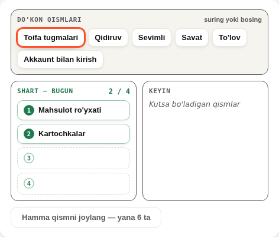
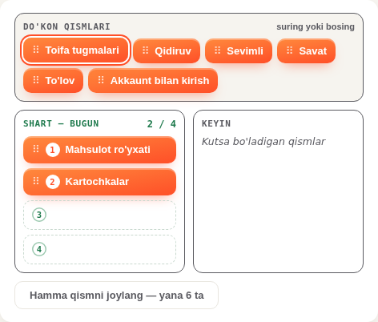

Praktikalar · 17.10 · 4-raund (12:10)
Sudraladigan chipni bitta darsda gradientga o'tkazdim — ko'ring, ma'qul bo'lsa hamma modullarga tarqataman. Asosiy tugma uchun 5 ta rang varianti haqiqiy darsda suratga olindi. Tanlab, pastdagi tugma bilan javobni nusxalang.
Qilindi
lint:prompt toza.

Hamma modullarda shunday qolgan oq sudraladigan elementlar topildi (faqat sanaldi, hech biriga tegilmadi):
| Tur | Qayerda | Fayl |
|---|---|---|
.dd-chip — oddiy sudraladigan chip | 1–4c-Modul (PmLesson2 ham) | 17 |
Boshqa nomli chip / karta (.cdrag-chip, .oc-plate-chip, .ip-gap, .rz-card…) | 4, 4a, 5, 7, 8, 12-Modul | 10 |
Ikkinchi qatordagi 10 tasining bir qismi chip emas, katta karta (masalan, kartani ustunga sudrash). Ularni bittalab ko'rib, faqat chipga o'xshaganini o'zgartiraman, kartalar ro'yxatini sizga alohida ko'rsataman. 5–12-Modul fayllari boshqa seanslarniki — ularga nazorat seansi orqali o'taman.
To'q sariq asosiy tugma («Saqlash», «Tekshirish»…) — 78 darsda bitta umumiy fayldan (src/qolip) keladi. Oq yozuv shu fonda yaxshi o'qilmaydi: kontrast 3.28, me'yor 4.5. Suratlar — m1-08 HTML Praktika, forma to'ldirilgan holat; faqat tugma o'zgargan.
Tanlov umumiy faylga tegadi — o'zgarishni nazorat seansi orqali qilaman (umumiy fayllar kelishuvi). Bu darslarning fayllari o'zgarmaydi.
Javobingiz
Variantlarni tanlang…